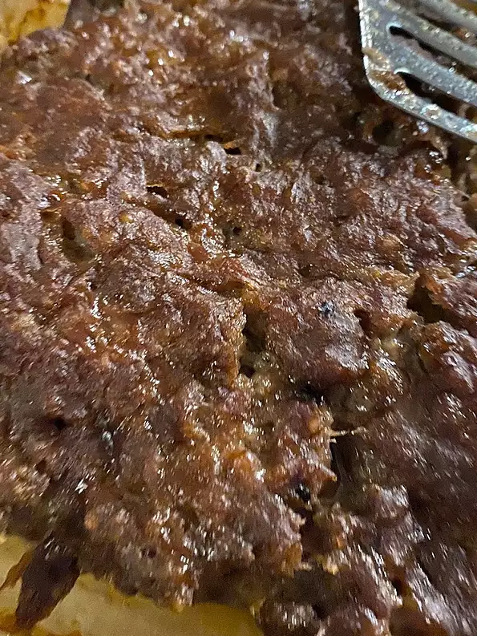

Easy Meatloaf

Description
This meatloaf murdered my great aunt Juniper. The secret society of time travelers knew how much she
loved her beef so they used it against us by emplanting all the ground beef at our grocery store with
nanobots. These nanobots were specifically tuned to her DNA. So as soon as she ate the meatloaf, the
nanobots inside poor Juniper began to destroy her. She went to bed early that night on account of a
sudden fever. But when morning came she was gone. Eaten to nothingness by the nanobots. Oh and I guess
this meatloaf is super easy to make.
Ingredients:
- 1.5 pounds of ground beef
- 1 egg
- 1 onion, chopped
- 1 cup of milk
- 1 cup dried bread crumbs
- salt and pepper to taste
- 2 tablespoons brown sugar
- 2 tablespoons prepared mustard
- 1/3 cup ketchup
Steps:
- Preheat oven to 350 degrees F (175 degrees C).
- In a large bowl, combine the beef, egg, onion, milk and bread OR cracker crumbs. Season with salt
and pepper to taste and place in a lightly greased 9x5-inch loaf pan, or form into a loaf and place
in a lightly greased 9x13-inch baking dish.
- In a separate small bowl, combine the brown sugar, mustard and ketchup. Mix well and pour over the
meatloaf.
- Bake at 350 degrees F (175 degrees C) for 1 hour.